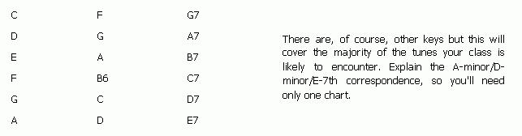
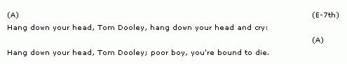

How To Teach A Guitar Workshop
If you're a passably-fair guitar player and wondering how to make money, look no further... Suzette Haden Elgin tells us exactly how to earn $40 with your guitar almost anytime you feel like.
By Suzette Haden Elgin
September/October 1971
If you're a passably-fair guitar player looking for a way to make some extra bread, look no further . . . because I'm going to tell you exactly how I use my guitar to clear better than $40 almost anytime I feel like conducting a pleasant, four-hour-long workshop.
That's right. Even if you're just an average or slightly-better guitar player, you can still earn $10 an hour teaching others to play the instrument. There's no need for you to be an expert in the classical, flamenco, jazz, rock or any other style, either. Actually, with my experience as a guide, you'll need only two qualifications: [1] you should play a competent-not superb, just competent-elementary folk guitar and [2] you should be able to carry a tune, and do it LOUD. The second requirement, in my opinion, is more important than the first.
What you'll do to earn your sparetime income is provide guitar workshops for people interested in learning to play the instrument with just that minimum amount of skill that will allow them to amuse themselves and-perhaps-the small groups that they deal with on a close basis. Your students will include folks such as elementary teachers, Sunday school teachers, youth group leaders, camp counselors and just plain people who want to have their families sing along with THEM. These folks have little interest in becoming expert instrumentalists and even less time to devote to such pursuits. They just want to play the guitar "a little".
Don't try to reach these potential students with an ad in the paper. In the first place, such an advertisement will cost more than it's worth and-in the second-it's sure to pull in lots of people who don't really want what you intend to provide. Word of mouth advertising and home-made postersput up in laundromats, on school bulletin boards, in churches and grocery stores-are much better methods of spreading the word about your first class. After that, if my experience is any indication, your problem will be the length of your waiting list rather than any lack of students.
The equipment entrance requirements for your workshop should be: [1] A guitar; [2] A capo (the capo is super important, as you'll see later); [3] Something to write on and [4] Something to write with. That's all. Nothing else.
During the four hours allowed for the workshop, you will teach your students: [1] Five chords (A, D, A-minor, D-minor and E-7th); [2] Two strums (T5, brush/T6, brush . . . and . . . T5, brush-brush/T6, brush, brush); [3] How to tune (the hardest part of all); [4] What the capo is for; [5] The basics of transposition.
Do not, under any circumstances, start your class with either the people's key of C or the people's other key of G. More potential guitarists have been stopped dead in their tracks by these two keys than by any other factor I know, including arthritis. C and G are great for picking melodies but they're HARD, man, and the key of A is exactly what you want for a beginner. I didn't pick those five chords listed above at random, either. I chose them because they're the easiest to learn and-once mastered-give a student one full major key and one full minor key.
The first strum I've listed is the most basic and I'm sure you know how to do it. Pluck the 5th string with the thumb, brush the top three strings with the back of the fingernails, pluck the 6th string with the thumb and do the brush bit again. The second strum is exactly the same except that each "brush" becomes a "brush-brush" to cover the rhythm of songs in 3/4 or 6/8 time.
I like to set up my four-hour workshops on a Saturday or Sunday from 10 to 12 and 1 to 3 with a one-hour lunch break in the middle and I divide the sessions this way:
MORNING
[1] YOU tune everybody's guitar. This is not the time to teach tuning.
[2] Explain the basics: how to hold the instrument, how the strings are numbered, etc.
[3] Teach A, then E-7th, using Hang Down Your Head, Tom Dooley as an illustrating song. Next, using the same chords and Down in the Valley as your example, show your students the strum with double brushes in it.
[4] Now teach D and use This Land is Your Land, which incorporates all three chords (A, E-7th and D) as your illustration.
[5] Somewhere in all this (probably when it becomes apparent that you can't sing Down in the Valley in A), show the class how to use the capo. They'll understand why without you telling them.
AFTERNOON
[1] Now teach your students how to tune. This is the time . . . after they've already discovered that they, by damn, can so play the guitar.
[2] Next teach A-minor (which is easy because it's exactly like E, only one string farther from their chins . . . and the class has already sort of learned E on the way to E-7th) and D-minor. A good illustrating song is Joshua Fit the Battle of Jericho, which uses these two minor chords plus E-7th.
[3] Tell your students about transposing (explained below).
[4] Finally, run through all the songs again and wish everyone the best of luck.
My reason for choosing Tom Dooley and Down in the Valley for a workshop's first two songs is not any sort of random thing, either. Both tunes have the same chord pattern; start on A and stay with it until the last word of the second line, then switch to E-7th and stay with that until the last word of the song . . . then go back to A. I've had lots of students who never became great guitarists but I've never had ANYBODY who couldn't learn to accompany himself on Tom Dooley and Down in the Valley. That's an incredible ego-boost for a student (particularly for one who's already fruitlessly tried two or three guitar courses at $3.50 a half-hour and up) even if he never goes any farther.
The only tricky thing on my list is transposing but it is necessary to teach a class something about transposition (after all, you're showing them only one major key and one minor key and most folk song collections contain songs in a lot of keys).
There are two ways to get this information across. One is to give your students the following chart and tell them to take it on faith:
There are, of course, other keys but this will cover the majority of the tunes your class is likely to encounter. Explain the A-minor/D-minor/E-7th correspondence , so you'll need only one chart.
In the second method of explaining transposition--which I prefer-the workshop is given the same chart and an explanation of how it works. The brief speech I make goes like this:
For 99 out of 100 folk songs, what you need is this: Find the last chord mentioned in the song. Call this the ONE chord and pretend it's written on your thumb with the rest of the musical alphabet on your fingers.
Now skip the chords on your index and middle fingers. The FOUR chord-the one on your ring finger-you need. The FIVE chord-plus the one extra note that makes it a 7th-is also necessary.
Let's say the song you want to do is in C. If you put C on your thumb and skip D and E, you'll find that F is your FOUR chord and G-7th is your FIVE chord. Do the same for A (a key you know) and you'll find that A is the ONE chord, D is the FOUR chord and E (or E-7th) is the FIVE chord.
Now substitute straight across the board as follows: everywhere there's a C you play an A (a ONE chord for a ONE chord); everywhere there's an F you play a D (a FOUR chord for a FOUR chord); everywhere there's a G 7 you play an E 7 (a FIVE chord for a FIVE chord). And that's all there is to it.
Unless they press you, don't worry the class with the intricacies of five chords versus sevenths. If they do press you, say that the five chord is made out of the first, third and fifth letters in the musical scale and that the seventh just adds the next letter up but one . . . that's why it's called a seventh.
You can leave all this out, of course, and simply rely on the chart . . . but then the students get the idea that there is some terribly esoteric theory behind the chart. I don't like that because I'm for demystification in teaching . . . but either approach, or a combination of both, will work.
When the class asks you what to do when they find no chord symbols written down for a song, tell them to start the tune on A and sing until it sounds wrong. At that point, try D. If that works, then D it is. If D doesn't work, the second chord has to be E-7th. Continue to the end in the chord that works and stop on A. This will horrify the musical purist but it will work perfectly satisfactorily in the vast majority of cases.
VERY IMPORTANT: If you have someone in the class who absolutely cannot tell when to change chords, tell him to always find music with chord symbols. It's unkind not to do so because, otherwise, he'll get up and make a fool of himself everytime he tries to play. Most people, however (although, at first, they won't know which chord to change to), will know when it's time to change . . . and, since they have only two choices, they can't go far wrong.
You should also tell your students that they can probably safely skip the extra ones if a song uses more than ONE, FOUR and FIVE chords. The result won't be as fancy but it will be quite all right.
Then you should explain to the class that these simplified principles will not always work on "popular" music, non-Occidental folk music or "composed" folk songs such as those written by Joni Mitchell. But, as long as the members of the workshop stick to the contents of the average book of folk songs (which is what they'll probably use at school, camp, church, etc.) they'll rarely have any problems. The individuals who want to go on to harder things, naturally, will need further lessons.
As the final bit of instruction, show your students where to find the time signature on a written song and tell them that they'll always know they need to brush twice-instead of once-in their strum if the TOP number is divisible by three.
Stop right there. You've given your class enough hard facts and music theory to digest. If they do what you've told them and practice what they've learned they'll have a good time with their guitars, give a lot of people pleasure and-in the case of the elementary school teachers-lead many children in singing in a way that doesn't have the icy formality of piano accompaniment. (Plus the fact that transposing on a piano is a LOT harder than transposing on the guitar . . . and you can't put a capo on a piano . . . and, therefore, the kids are usually stuck with the key in which the song is written no matter whether it's too high for them or not).
Finally, there's the matter of organizing the workshops. I limit my classes to ten people at $5.00 apiece and I suggest you do the same. If you do, you'll take in $50 per workshop and your expenses should run less than $5.00 total if you hold the class in your own living room. If you have small children, however, figure the cost of a sitter into your overhead since the kids will make your class a work less -shop if they room in and out while you're teaching.
If you don't have a blackboard in your livingroom (few livingrooms come so equipped), you'll need to make a large, colorful chart that illustrates the five chords. I used a piece of posterboard (29 cents) for mine and three marking pens: black for the grid that shows the strings and frets, red to make a large dot where the finger goes and green for the number of the finger that corresponds to the dot. Make your chart once and make it right and it'll last forever.
You will need songsheets containing TomDooley, Down in the Valley, This Land Is Your Land, Joshua and the transposition chart. You can just type or write out these sheets for the ten people in your first class or-in most towns-you can now have 100 copies of a single sheet of material printed or Xerozed for less than $4.00. This will hold you for nine-plus workshops and is cheap at the price. I write the songs like this:
You can get all this on one sheet quite easily and, if you want to, you can probably put the symbols for the five chords across the bottom of the page. All for four bucks. You should have no other expense but your guitar strings and whatever you put into your posters . . . and that shouldn't be very much.
If you do a couple of these workshops a month you'll add close to a hundred dollars to your income-or your commune's income-for a minimum of time spent and agony expended. There are two other possible uses for the classes:
[1] You can conduct the workshops on a volunteer: for-free basis. This is a particularly good way for a commune to overcome community ill will . . . do a class for the Girl Scouts and one for the SeniorCitizens and see what happens.
[2] You may also want to turn a workshop into a benefit: charge your regular fee and donate the money to your favorite good cause
One final word: be sure to point out, on your poster, that guitars can usually be rented from local music stores, by the month, at minimal expense. This will solve a problem for lots of your potential students.
 |
 |
 |